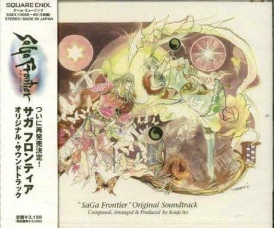
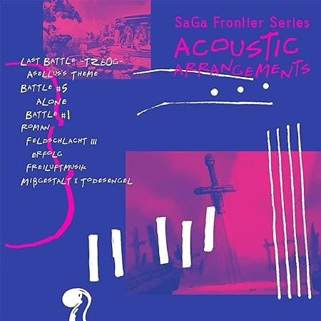

サガフロ実況～リュート編～
実況プレイ～リュート編～
#1 資質集め
#2 時空の君爆誕とスプラッシュソード狩り
#3 ハイペリオン狩りとダンサーシューズ狩り
#4 ダンサーシューズが欲しいんです
#5 イクストルからブリューナクを奪いとりゅ
#6 ソルリングだけのつもりが気が付いたらソルリングと霧氷の銀貨とキットンソックスとシルバースプレッドをゲットしていた回
#7 リビングアーマー、超銅金アームレットを狙う回
#8 普通にリュート編を終わらせた後、R&Rからストーカーを狙う回
サガ フロンティア オリジナル・サウンドトラック（CD）

SaGa Frontier Series ACOUSTIC ARRANGEMENTS
